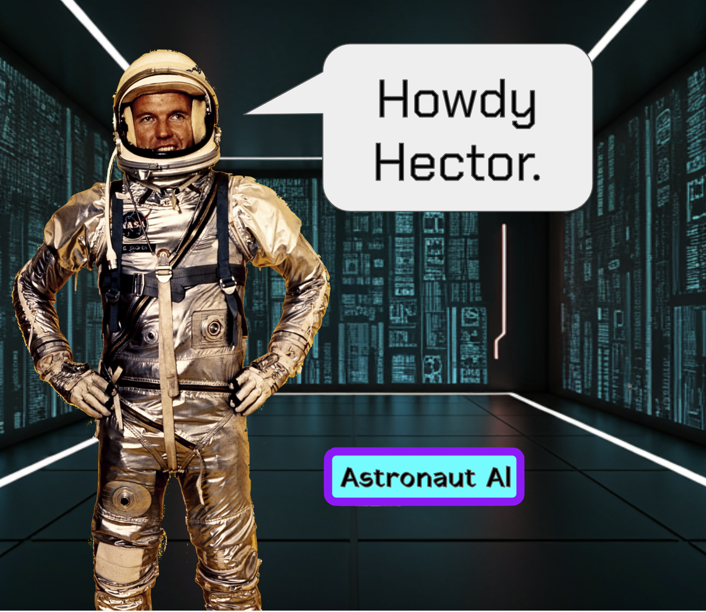
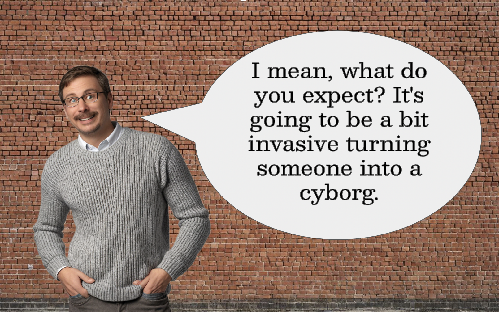

MoonChampionshipWrestling is now under new ownership. As a result, we are reconsidering your qualifications to remain an active member within the organization.
In the beginning, there was nothing. Nada. Naught.
Now let me start: this story is true, albeit not true in our uniVerse. But, considering the unfounded - yet plausibly probable - axiom that we live in an infinitely large multiVerse, it seems to follow that this story will be true somewhere in the space-time continuum.
So, 3.2 kilojaars after yeshi boiled in the giant cauldron, there was a town in OIHO called BeaverCreek, whose concentration center was approximately sixteen klicks east of downtown Dayton. On 32 June 3223 PB, Hector Chavez withdrew from the official rolls to purportedly «homeskool».
This was an untruth.
In reality, Hector's family was following an illegal protocol established by an AMABALA-based company whose shell company, Traveling Mouth Band (TMB) University, which was legally contracted with the state of OIHO to provide «alternative educational services» (AES). By plucking Hector from the homeSkool category (rather than the publikSkool category), they were able to maximize state-contributions to PerPupilSpending.
Before this change, Hector's family was facing legal action for truancy, as Hector had begun a 'lucid dream regiment' (LDR) that led to an eccentric sleep-wake pattern in total incoherence with the regularly schedule day at the BeaverCreekConcentrationCenter. At TMB, this would not be a problem.
Uriah Bleu was the AMABALA boy who told Hector about LDR and TMB. He and Hector met on the internet, participating in an online roleplaying competition within the millieu of a corrupt pro'rasslin company operating on a lunar colony, [MoonChampionshipWrestling (MCW)].
Uriah Bleu controlled a 'rassler named «Dead Man Douglas».
Hector Chavez controlled a 'rassler named «Psycho Bunny».
None of this really mattered, except that:
And then one day, Astronaut Al, the drunken astronaut, was given an absurd amount of monies to surrender the MCW projekt to TMB University.
So Hector sent a message to Uriah Bleu.
 Uriah
Uriah
Uriah
Uriah
Hector's helmet was broken, but his younger brother - name redacted - had one. So Hector unceremoniously used his older age to boot his little brother from a living room game of BlikBlok™, before sliding the helmet over his head.
> The XYZ room did not feign to protray reality; the walls, floors, and ceiling were glowing shades of green like cheap light emitting diodes emulating microchips.
"Is that you?" Hector asked. "Or a deepfake approximation of you?"
"Oh, it's me," Al said. "The real deal."
"So, I hear they paid you 3.0e7 ¢oin to turn the MCW into a cudgel to force us to drop out of publikskool," Hector said. "I mean, who does that?"
Al shook his head. "You got me. I have no idea who these people are. But that was too much ¢oin to pass up."
"You [redacted]."
"You say that like it's a bad thing. Besides, what's really crazy is the next part: part of that ¢oin is to relocate me to your neck of the woods.
"They're moving you to OIHO?"
"BeaverCreek, OIHO," Al said.
"Why would they move you here?" Hector asked. "Are they part of the Air Force?"
Astronaut Al shrugged. "They didn't indicate anything about that."
"There's an Air Force Base here."
"Well, the physical location they want me to manage is not on any military base. In fact, it's like a klick from your house."
The location was familiar to Hector. It was within a strip mall that Hector had often frequented as a child with neighbourhood boys, when they'd buy little things at the [now shuttered] local grocery story. Or go to the movies [at the now defunct and demolished theatre]. Or eat at the [fast food burger joint] before it became an ordinary bank. Or a myriad of other options that may or may not have continued to exist.
The location already had a sign. «[blank space]», it read. The location used to be a random shop with wares not intended for the perusal of pre-teen ruffian youths, but it was nonetheless the site where Hector committed his first [confessed] transgression against Ahuramazda. This is where he stole a pack of playing cards to join a neighbourhood gang run by a group of older boys.
The gang dissolved within a moonth. The store, in a few more.
Hector peered through the front glass window. Astronaut Al laid atop a couch, seemingly asleep.
Hector knocked. Al's eyes opened up and he shifted to his feet. He unlocked the door and let him in.
"Here you are," Al said. "Finally in the flesh, we meet."
"I'm homeskooled now," Hector said.
"Interesting," Al said. "Have you undergone the pattern-recognition special education diagnostic?"
Hector nodded.
Uriah
Uriah
Uriah
Uriah
Hector didn't accept Uriah's offer. Not for LSA. But half-a-moonth later, he heard a buzzing noise outside his bedroom window, which lacked the insect screen, curtains, and blinds that suburbanites find customary. The NyleDrone™ flew directly through the open window, carefully lowered a tiny packagage, and then flew away.
Hector picked up the package, which was the same size of one of his hands.

Hector opened it and the interiour was exactly what was demurely described on the exteriour: iContacts™, a visual overlay that rest atop your cornea. Many used hand-manipulators to control content and some followed voice-commands. This one responded to the low-frequency radio waves that emanate from the inside of one's skull.
Hector lifted up a tiny sheet of paper.
"Before attempting to utilize this device, please visit [redacted].
Hector rode his bicycle to the address, a windowless factory off of FS-35 in eastDayton. He knocked on the door that appeared to be the entrance. He waited. He knocked some more. He waited. He knocked again.
Finally, he heard footsteps and the door opened.

"Yes?" the man said.
"I was told to go here," Hector said, handing the man the piece of paper.
The man looked doubtfully at the piece of paper. "Come in."
Hector entered the building and found it to be desolate, a shell of what was prob'ly a glorious beacon of industry. Hector looked around and saw no other humans. This man could try to kill Hector, and nobody would be there to hear his struggle.
The man put on a gray sweater. On a large workstation, Hector could see the religious artifacts of a Maniite: twigs twined together in packets of prime numbers in sequential order. 2, 3, 5, 7, 11, 13, 17...
"So you work for TMB?" Hector asked.
"I work for a lot of people," the man said. "How old are you?"
"Sixteen jaars," Hector said.
"You parents here?" he said. "I can't perform this procedure without their explicit permission. And governnment identification. It's a whole thing."
"Procedure? Wait, what kind of procedure?"
The man grinned. "I have to perform electrolysis to remove obstructions to various pores in your head so I can apply an epoxy that contains nano-fibers featuring properties of extreme electromagnetic sensitivity."

"I'm not wearing the iContacts™," Hector said.
Astronaut Al closed the door of the mini-fridge. "That's fine. You don't have to."
"I don't have to?"
"No. You don't. It's your choice. Ultimately."
"Whaddya mean «ultimately»? They punish you for it?"
"You punish yourself. You cut yourself off from the finances."
"Finances? What are you talking about?"
Astronaut Al smiled.
"You know how much ¢oin the gov't gives concentration centers for each student?"
"About a mega¢oin?"
"Good guess. About a mega¢oin and a half. Depends on the district."
"Okay."
"TMB gets a fraction of that. But you know what TMB doesn't have? Massive overhead. No buildings, no paraprofessionals, no teachers, no administrators..."
"So what are you saying? They give those monies to students? But only students who wear iContacts™?"
Al unfolded a sheet of paper from his pocket and cleared his throat.
"To entice academic productivity amongst the student population, TravelingMouthBand University shalt provide material resources to aid and abet eduProjekts in a fashion commensurate to the efforts-&-effects of individual students."
"Okay," Hector said. "So they mail you stuff to help you pay for projekts?"
"Anything you want," Al said. "As long as you can justify it." Then Al pulled out a trunctuated cigarillo. "And if it's legal."
"Anything?"
"It doesn't take much to justify an eduProjekt. An eduProjekt can be a walk down the block in the form of «modern dance». You're a clever boy. You could figure it out."
"Equipment needed for a promotional feature on MoonChampionshipWrestling?"
Al pointed and nodded, using a flamingSword™ to incinerate the cigarillo. "Now you're thinking. Only one problem: TMB can only assess student efforts-&-effects if they see it. No iContacts™ recording events? Not much for them to assess."
Hector watched Al inhale air through the paper-plant cylinder, brightening the red burning, and creating a smokey byproduct.
"Who is them?" Hector asked.